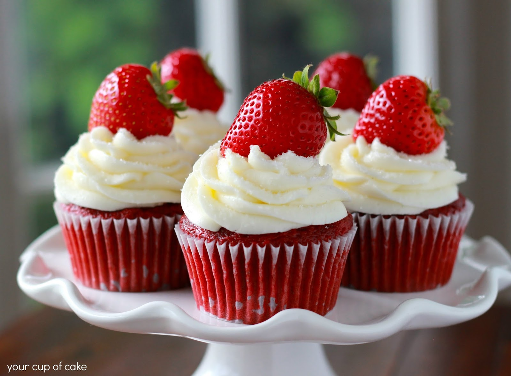

Simple Strawberry CupCake Recipe
Soft, fluffy strawberry cupcakes made with real strawberries for a naturally sweet flavor. Perfect for any celebration or a sweet afternoon treat.
Preparation time
- Total:Approximately 35 minutes
- Preparation:15 minutes
- Cooking:20 minutes
Ingredients
- 1 cup fresh strawberries (chopped)
- 1 ½ cups all-purpose flour
- ½ cup unsalted butter (softened)
- ¾ cup granulated sugar
- ¾ cup granulated sugar
- 1 tsp vanilla extract
- 1 ½ tsp baking powder
- ¼ cup milk
Instructions
- Preheat oven to 180°C (350°F) and line a cupcake tray with liners.
- In a bowl, whisk together flour and baking powder.
- In another bowl, cream butter and sugar until light and fluffy.
- Add eggs one at a time, beating well after each.
- Mix in vanilla extract.
- Gradually add the dry ingredients and milk alternately, mixing gently.
- Fold in the chopped strawberries.
- Spoon the batter into liners and bake for 18–20 minutes.
- Cool before serving.
Nutrition
The Table below shows nutritional values per serving without the additional fillings.
| Calories | 180 kcal |
| Fat |
7g |
| Carbohydrates |
24g |
| Sugar |
14g |
| Protein |
3g |